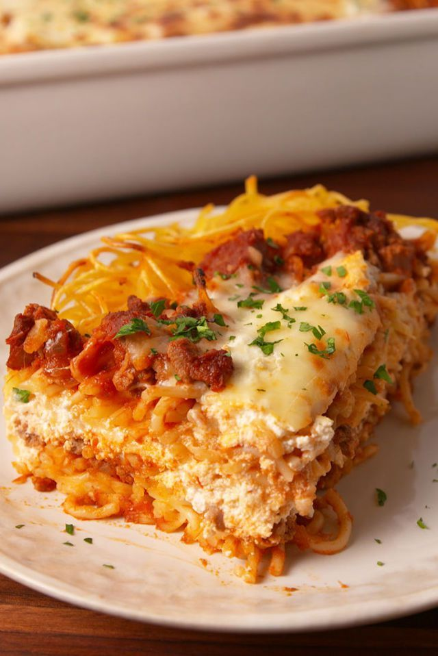

Lasagna

Description
Indulge in the culinary symphony of flavors with our mouthwatering
lasagna. Layer upon layer of tender pasta sheets embrace a rich and hearty
blend of savory ground meat, velvety marinara sauce, and a medley of
aromatic spices. Each stratum is generously smothered with a luscious
mixture of creamy ricotta, mozzarella, and Parmesan cheeses, creating a
heavenly melange that melts in your mouth. Slow-baked to perfection, the
lasagna emerges from the oven with a golden crust that exudes a
tantalizing aroma, enticing you with its promise of culinary bliss.
With every forkful, you savor the harmonious marriage of tender pasta,
succulent meat, and delectable cheese, accompanied by the tangy sweetness
of the tomato sauce. Whether enjoyed as a comforting family feast or a
gourmet centerpiece for a special occasion, this lasagna is a culinary
masterpiece that will leave you craving for more.
Ingredients
- Lasagna sheets
- Ground meat (beef, pork, or a combination)
- Marinara sauce
- Ricotta cheese
- Mozzarella cheese
- Parmesan cheese
- Onion, finely chopped
- Garlic, minced
- Italian seasoning
- Salt and pepper, to taste
- Olive oil
- Fresh basil leaves (optional, for garnish)
How to make delicious Lasagna
-
Preheat the oven to the recommended temperature for baking lasagna.
-
Heat olive oil in a large skillet over medium heat. Sauté the chopped
onion and minced garlic until translucent and fragrant.
-
Add the ground meat to the skillet and cook until browned, breaking it
up into smaller pieces with a wooden spoon.
-
Season the meat with Italian seasoning, salt, and pepper. Stir well to
incorporate the flavors.
-
Pour the marinara sauce into the skillet, stirring it into the meat
mixture. Allow the sauce to simmer gently for a few minutes.
-
In a separate bowl, combine the ricotta cheese with a portion of grated
Parmesan cheese. Mix well until fully incorporated.
-
Spread a thin layer of the meat sauce on the bottom of a baking dish.
-
Place a layer of lasagna sheets on top of the sauce, covering the entire
bottom of the dish.
-
Spread a layer of the ricotta cheese mixture over the lasagna sheets,
followed by a layer of mozzarella cheese.
-
Repeat the layers, alternating between the meat sauce, lasagna sheets,
ricotta cheese mixture, and mozzarella cheese until the ingredients are
used up, ending with a layer of mozzarella cheese on top.
- Sprinkle additional grated Parmesan cheese over the top layer.
-
Cover the baking dish with aluminum foil, ensuring it is tightly sealed.
-
Place the dish in the preheated oven and bake for the recommended time,
or until the lasagna sheets are tender and the cheese is melted and
bubbly.
-
Once cooked, remove the foil and allow the lasagna to rest for a few
minutes before serving.
- Garnish with fresh basil leaves, if desired.
-
Slice and serve the lasagna while it's still warm, savoring each
delectable layer of flavors.